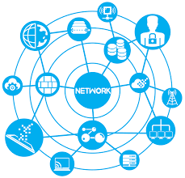

Mark ZUCKERBERG
In the latest episode earlier this month, Mr Zuckerberg revealed that he wants to create a new section on Facebook dedicated to high-quality and trusted news.
John ABRAMOV
In the latest episode earlier this month, Mr Zuckerberg revealed that he wants to create a new section on Facebook dedicated to high-quality and trusted news.

Trapper WASH
In the latest episode earlier this month, Mr Zuckerberg revealed that he wants to create a new section on Facebook dedicated to high-quality and trusted news.
— mental health memes (@edmemes5) July 30, 2019
King KINGSTONE
In the latest episode earlier this month, Mr Zuckerberg revealed that he wants to create a new section on Facebook dedicated to high-quality and trusted news.
The writer of the academic essay aims to persuade readers of an idea based on evidence. The beginning of the essay is a crucial first step in this process. In order to engage readers and establish your authority, the beginning of your essay has to accomplish certain business. Your beginning should introduce the essay, focus it, and orient readers.
Eliza ELIZABETH
In the latest episode earlier this month, Mr Zuckerberg revealed that he wants to create a new section on Facebook dedicated to high-quality and trusted news.
You can come with this adress by useing metro and metrobus